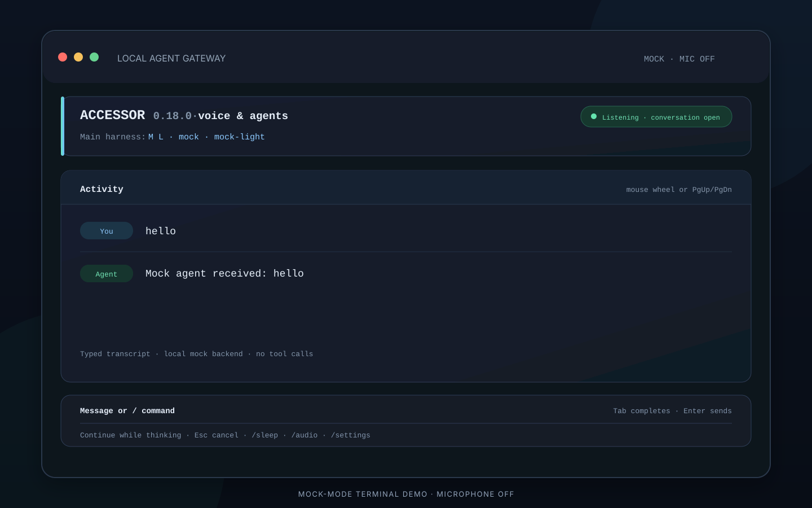
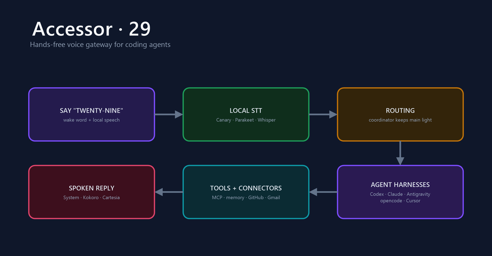

Accessor
A local voice gateway for coding agents. Talk to Codex, Claude Code, and other agent harnesses, with local speech recognition, spoken replies, and shared memory.

View source and setupDownload a release
Say “twenty-nine” to open a conversation with a coding agent. Accessor manages speech recognition, the conversation, and a terminal dashboard while reusing the agent’s tools and account connections.
The Rust gateway supports Codex App Server, Claude Code, Antigravity, opencode, and Cursor. Local wake detection and transcription, configurable spoken replies, shared memory, and typed commands connect the voice workflow to the tools you already use.
Voice or keyboard, the same conversation
- Local Canary, Parakeet, or Whisper transcription, with Piper speech by default and optional cloud voices.
- A terminal activity pane for replies and tool calls, plus settings, approval controls, and spoken harness switching.
- Shared memory, notes, alarms, and scheduled tasks that persist across agent harnesses.
Accessor is a local desktop tool. Windows, Linux, and Apple Silicon builds are available in Releases. Try acc --text --agent mock for a text-only session without an account or microphone.
The voice pipeline
